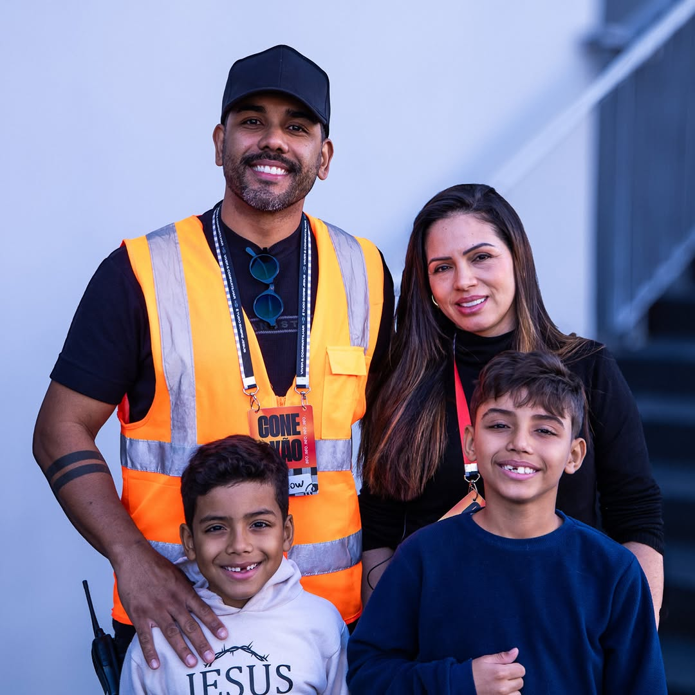

CNPJ
54.380.087/0001-07
Somos um projeto de plantação de uma nova igreja para as novas gerações — uma comunidade de fé sustentável, feita de pessoas diferentes e unidas pelo amor a Jesus.

A Igreja Evangélica Mult nasceu do sonho de plantar uma nova igreja a partir de um coração missional e fiel à Palavra, respondendo a uma pergunta que sempre nos inquietou: onde nossos filhos e netos poderão aprender a viver e ser igreja diante dos desafios atuais?
Entendemos que Jesus fez algo por nós, está fazendo algo em nós e deseja fazer algo através de nós. Por isso sonhamos com uma comunidade de fé sustentável e multigeracional, onde os mais experientes servem com fidelidade, inspirando e investindo nas gerações mais novas — e onde cada pessoa entende o seu papel e a sua responsabilidade.
Somos liderados pelo casal plantador Pr. Tiago Corrêa & Aline Corrêa, com sede em Campinas/SP, e nos mantemos inteiramente pela generosidade voluntária de quem abraça essa missão — cada recurso é reinvestido na obra e no cuidado com as pessoas.
Pastores comprometidos com a Palavra e apaixonados por pessoas, dedicados a servir e cuidar da comunidade Mult.
Casado com Aline, pai da Laurinha. Vive e compartilha a fé em Jesus de maneira autêntica, à frente da plantação da Mult.
@prtiagocorrea →Casado com Lary, pai do Mateus. Ajuda a nova geração — e as crianças no Multkids — a viver e compartilhar a fé em Jesus.
@jglazarini →Existimos por um propósito claro. Cada frente da nossa igreja serve à mesma direção: alcançar e transformar vidas por meio de Jesus.
Viver e compartilhar a fé em Jesus de maneira autêntica. Somente através dEle podemos voltar a desfrutar de uma vida autêntica com Deus e compartilhá-la uns com os outros.
Ser uma igreja que existe e funciona para alcançar e transformar vidas — centrada na Grande Comissão que Jesus confiou aos discípulos.
Mateus 28.16–20Alcançar e investir nas novas gerações, para que a vida e a missão sejam prolongadas de geração em geração, através de uma comunidade multigeracional.
Fazemos o que fazemos com propósito e comprometimento com a missão de Jesus e com as pessoas.
Servimos com amor e generosidade, dando a nossa vida em favor dos outros, como Cristo fez por nós.
Buscamos excelência e criatividade para apresentar o evangelho de forma relevante a cada época e cultura.
Seguimos Jesus e assumimos a responsabilidade pelo nosso próprio desenvolvimento e pelo desenvolvimento dos outros.
Somos filhos de Deus que vivem e cuidam uns dos outros como família, nas necessidades físicas e espirituais.
Servimos os outros como modo de vida, com alegre submissão a Deus, à liderança e uns aos outros.
Somos enviados à nossa cultura com a missão de restaurar todas as coisas para Deus por meio de Jesus.
De forma breve, somos uma igreja cristã, evangélica, missional e reformada — nessa ordem de importância. A Bíblia é a nossa única e imutável fonte de fé.
Cremos que a Bíblia é a Palavra de Deus, inspirada por Ele, inerrante e relevante para todo homem em todo tempo.
Cremos em um único Deus que existe em três pessoas: Pai, Filho e Espírito Santo, igualmente dignos de adoração.
Jesus, totalmente Deus, encarnou-se, viveu sem pecado, morreu em nosso lugar e ressuscitou ao terceiro dia.
A salvação é um dom de Deus, recebido somente pela graça mediante a fé em Jesus Cristo como Senhor e Salvador.
A Igreja é o corpo e a noiva de Cristo — em nível local, uma comunidade de amor que impacta sua cultura com o Evangelho.
Cremos na volta pessoal e iminente do Senhor Jesus Cristo, que virá para os que foram redimidos por Ele.
Somos uma comunidade viva — que se reúne aos domingos e ao longo da semana para adorar, servir e crescer junta. Acompanhe o nosso dia a dia no Instagram.
Estamos em busca de pessoas dispostas e decididas a viver algo novo e incrível para a glória de Deus. Há três formas de construir esse futuro junto com a gente.
Você pode adotar a Igreja Mult em oração, intercedendo pelo projeto de plantação, pela formação de líderes e pela provisão de recursos. A missão de plantar uma igreja requer intercessores fiéis.
Generosidade é resposta à graça: damos porque primeiro fomos alcançados pelo amor de Deus. Sua oferta é investimento em vidas e sustenta o avanço da plantação — entregue com alegria, de forma espontânea ou por meio de um compromisso semestral ou anual.
Engaje-se de maneira integral, usando sua vida, dons, recursos e tempo. Se você deseja construir o futuro com a gente, fale conosco para dar o próximo passo.
Quero ser igreja →Quer conhecer a Mult, tirar dúvidas ou dar o próximo passo? Estamos por aqui.
Acompanhe nosso movimento e junte-se a nós. Ambientes presenciais e virtuais para viver e compartilhar a fé de maneira autêntica.